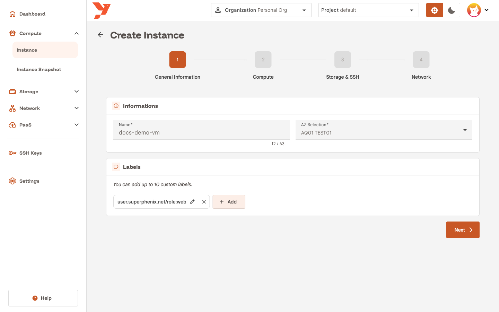
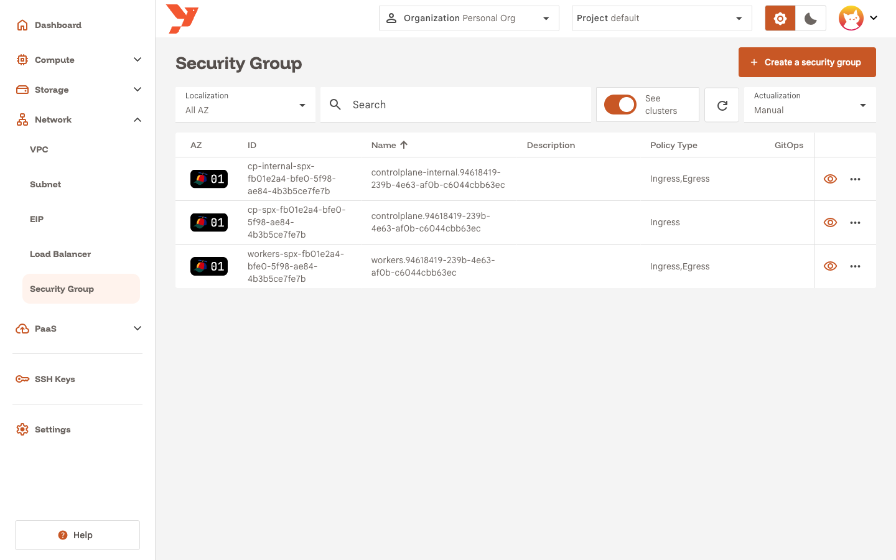
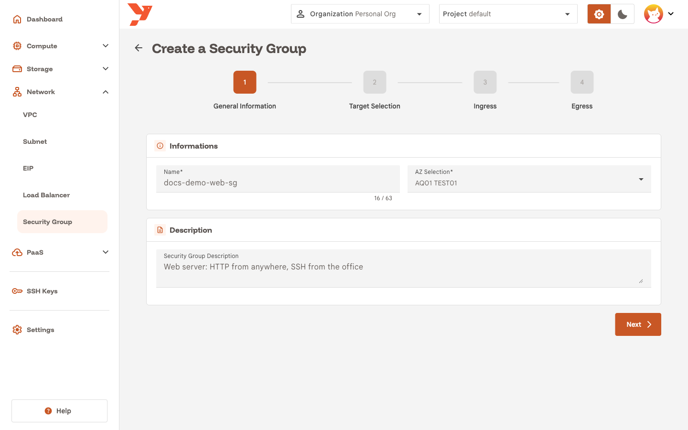
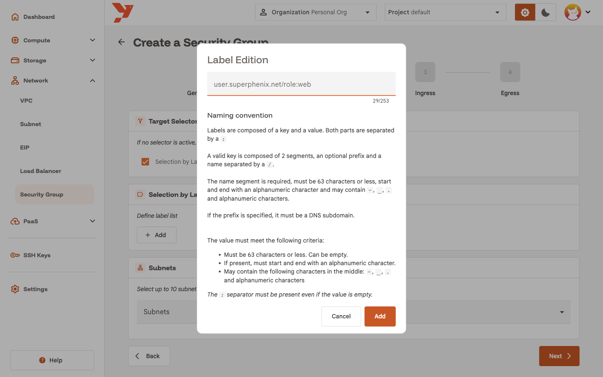
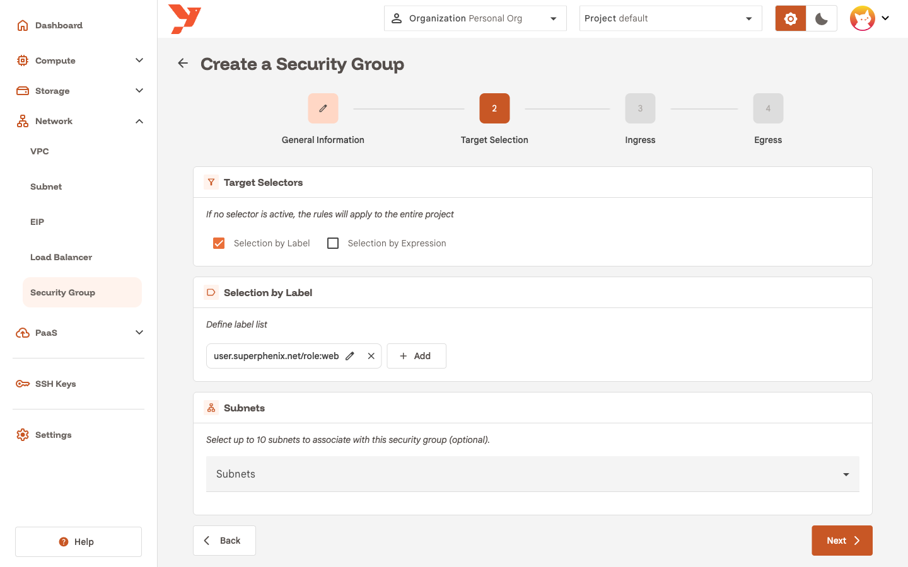
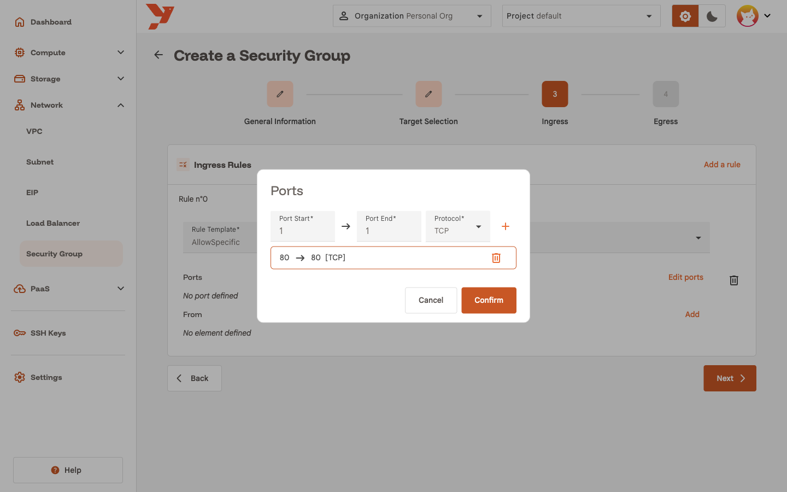
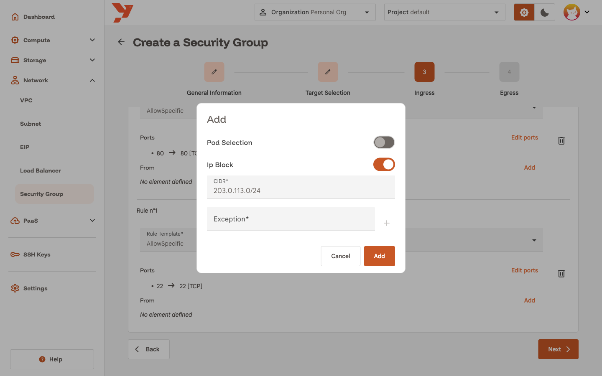
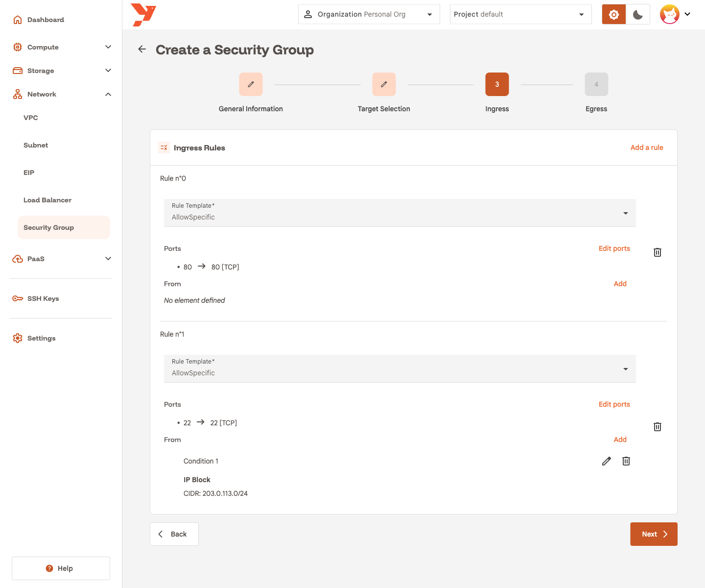
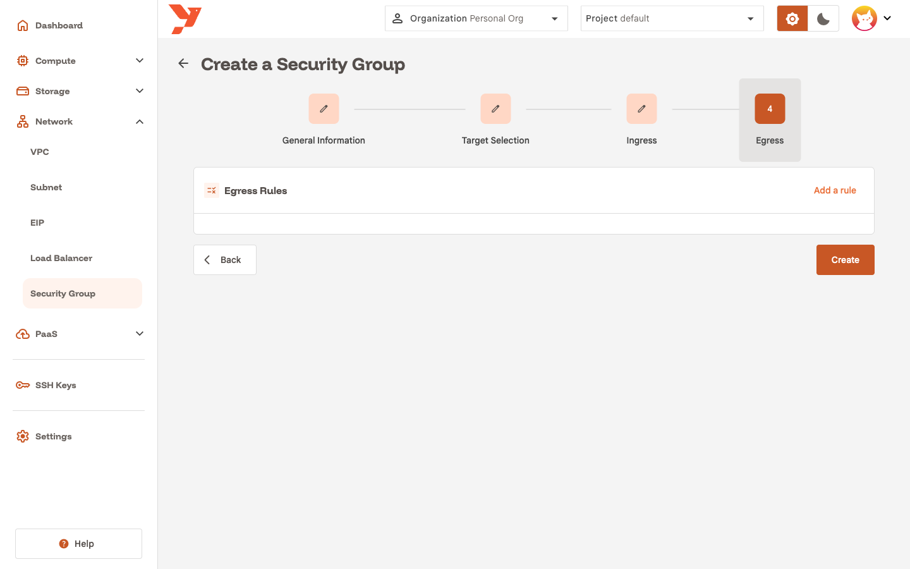
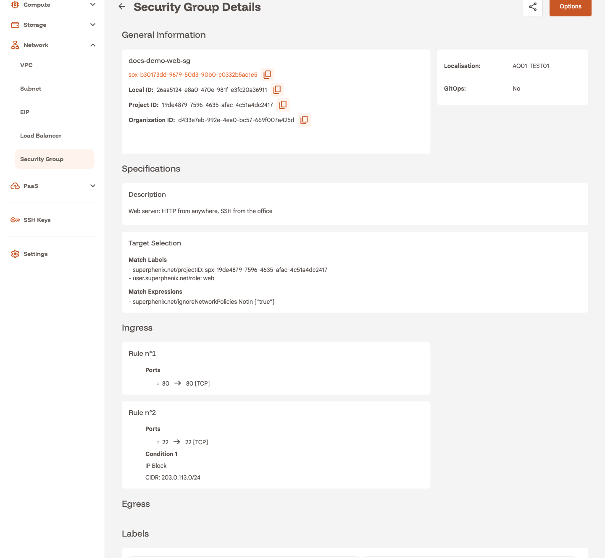

Create a security group
A security group is a set of ingress and egress rules that the platform applies to the VMs of a project. This guide builds one for a web server: HTTP open to everyone, SSH open to one address range, everything else inbound dropped.
The security group does not attach to a VM. It selects VMs by label. You put a label on the VM, then write the same label in the security group's Target Selection step, and the rules apply to every VM that carries it. When several security groups select the same VM, the VM accepts any traffic that at least one of them allows.
For the concepts behind network policies, read Network.
Before you start
- Select your organization and project in the top bar.
- Know which VMs the rules apply to, and which label they share. The guide uses
role:web. - Decide the ports and sources you allow. The guide allows TCP
80from anywhere and TCP22from203.0.113.0/24.
Label the VM
The console adds the prefix user.superphenix.net/ to every custom label you put on a VM. A label typed as role:web becomes user.superphenix.net/role:web, and this full key is what the security group matches.
To label a new VM, open the Labels card in step 1 of the instance wizard, click Add, type role:web in the Label Edition dialog and click Add. The chip shows the label with its prefix. See Create a virtual machine for the other steps.

To label an existing VM, open its details page and click Options → Edit. The same Labels card sits in the first step.
Open the wizard
- In the sidenav, open Network and click Security Group.
- Click Create a security group.

The list shows the security groups the platform created for your Kubernetes clusters when the See clusters switch is on. You cannot edit or delete those.
The wizard has four steps: General Information, Target Selection, Ingress and Egress. Click Next to move forward and Back to change an earlier step. The Create button sits on the last step.
Step 1: General Information
- Enter a Name, for example
docs-demo-web-sg. - Pick the AZ in AZ Selection. The security group applies to VMs in that AZ.
- Optional: write a Security Group Description. The details page shows it.
- Click Next.

Note
The AZ is final. To protect VMs in another AZ, create a second security group there.
Step 2: Target Selection
This step decides which VMs the rules apply to.
- Check Selection by Label. A Selection by Label card appears.
-
Click Add and type the full label, prefix included:
user.superphenix.net/role:web. Unlike the VM wizard, this dialog adds no prefix for you.
-
Click Add in the dialog. The chip appears in the card.
- Leave Subnets empty and click Next.

With both checkboxes unchecked, the rules apply to every VM of the project in that AZ. Use that for a project-wide baseline.
Selection by Expression matches on label keys with In, NotIn, Exists and DoesNotExist. Pick it when one label value is not enough, for example to target every VM whose tier label is web or api.
The Subnets card restricts the security group to VMs on the subnets you pick, up to 10. Leave it empty to cover every subnet of the AZ.
Step 3: Ingress
Ingress rules filter traffic that reaches the VMs. The list starts empty. Click Add a rule once per rule.
Each rule has a Rule Template:
| Template | Effect |
|---|---|
AllowAll |
Accept every inbound connection. |
DenyAll |
Drop every inbound connection. |
AllowSpecific |
Accept the ports and sources you list below the template. |
Rule 0: HTTP from anywhere
- Click Add a rule and set Rule Template to
AllowSpecific. -
Click Edit ports. In the Ports dialog, set Port Start and Port End to
80, keep Protocol onTCP, and click the + button. The range shows as80 → 80 [TCP].
-
Click Confirm.
- Leave From with no condition. A rule with ports and no source accepts those ports from any address.
Rule 1: SSH from one range
- Click Add a rule again and set Rule Template to
AllowSpecific. - Click Edit ports, add
22to22onTCP, and click Confirm. -
Click Add next to From. In the dialog, switch Pod Selection off and Ip Block on, then enter the range in CIDR. The guide uses
203.0.113.0/24.
-
Click Add. The condition appears under the rule as Condition 1 with its CIDR.

Click Next.
Warning
One ingress rule is enough to close every other inbound port. After this step, the selected VMs accept TCP 80 from anywhere, TCP 22 from 203.0.113.0/24, and nothing else. ICMP and DHCP stay open on every security group, so ping still answers.
What a condition can hold
Ip Block matches source addresses in a CIDR. Exception removes single addresses from that range. Pod Selection matches other VMs of the same project by label or expression, for a rule such as "accept 5432 from VMs labelled role:api". A condition needs at least one of the two. A rule with several conditions accepts traffic that matches any of them.
Step 4: Egress
Egress rules filter traffic the VMs send. The guide adds none: the web server keeps full outbound access for updates and DNS.

Click Create.
Egress with no rule stays open as long as the group has at least one ingress rule. To close outbound traffic, add one egress rule with Rule Template DenyAll, then add AllowSpecific rules for what the VM may reach. The To conditions work like From.
Warning
A group with no rule in either direction still restricts traffic. The platform treats an empty rule set as ingress-only, so the selected VMs drop every inbound connection while outbound stays open. The details page shows that state as Deny All under Ingress. A group with egress rules and no ingress rule leaves inbound traffic open.
Read the security group details
The console opens the details page. Target Selection shows your label next to two entries the platform added: the project ID label, which keeps the rules inside your project, and an expression that excludes platform components from the policy. The Ingress section lists the two rules. The Egress section is empty.

The Options menu holds Edit and Delete. Edit reopens the four-step wizard with the current values. Deleting a security group removes its rules from the VMs it selected. The VMs keep running.
To bring a VM into the group later, add the label to it. To take one out, remove the label. Neither change touches the VM's lifecycle.
Test the rules
Give the VM a public address with Expose a VM with an Elastic IP, then probe it from a machine outside the allowed range:
Port 80 reports succeeded. Port 22 times out, since your address is outside 203.0.113.0/24. ping still gets replies. On macOS, add -G 5 to the nc commands so the connect attempt times out. Edit the group, replace the CIDR with your own public address as a /32, and port 22 opens within seconds.
Next
- Expose a VM with an Elastic IP to reach port 80 from the Internet. The security group filters the traffic that arrives through the public address.
- Create a subnet with a NAT gateway if the VMs need outbound Internet access.